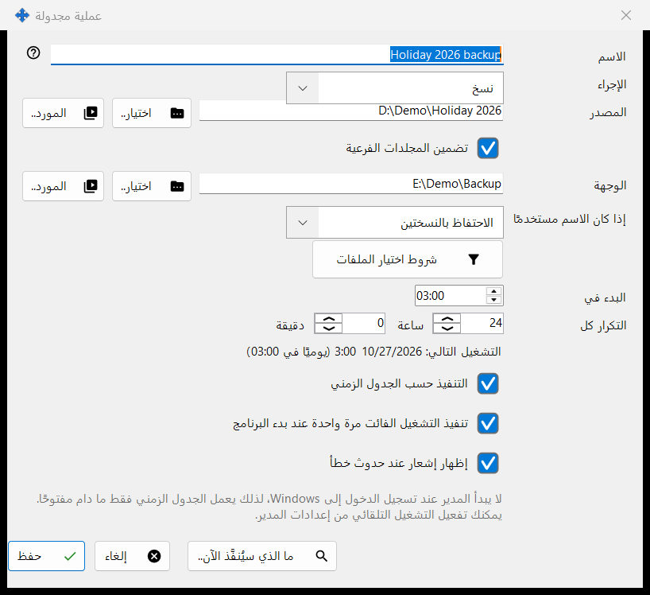
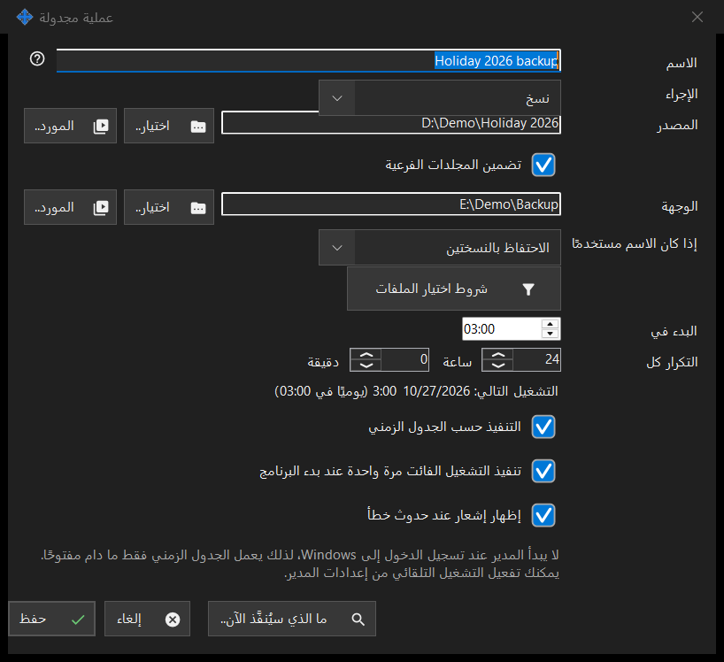

عملية مجدولة
الغرض من هذه النافذة
تحرّر عملية ملفات مجدولة واحدة: نسخ الملفات أو نقلها أو حذفها أو أرشفتها من مصدر إلى وجهة وفق جدول متكرر. تُثبَّت عمليات الملفات المجدولة مع Share Manager - في حزمة واحدة ودون تنزيل منفصل ودون خدمة Windows - وتعمل ما دام Share Manager يعمل في جلسة تسجيل دخولك. ولا تحتاج إلى مشاركة مجلدات ولا إلى خادم ولا إلى منفذ مفتوح ولا إلى صلاحيات المسؤول. تُفتح هذه النافذة من الزرين جديدة.. وتعديل.. في نافذة العمليات المجدولة وفي صفحة عمليات الملفات المجدولة بإعدادات Share Manager، ومن عنصر قائمة مجلد العارض جدولة عملية لهذا المجلد.. الذي يملأ ذلك المجلد مصدرًا.


بهذا الترتيب
- أدخل الاسم واختر الإجراء.
- حدّد المصدر، والوجهة للنسخ والنقل والأرشفة، بالأزرار اختيار.. أو المورد.. أو عبر Google Drive.
- للنسخ والنقل اختر ما يحدث إذا كان الاسم مستخدمًا.
- افتح شروط اختيار الملفات لتضييق الملفات.
- اضبط البدء في والتكرار كل، وأبقِ التنفيذ حسب الجدول الزمني محددًا.
- افحص ما الذي سيُنفَّذ الآن.. ثم اضغط حفظ.
عناصر النافذة
البدء
افتح نافذة العمليات المجدولة من قائمة أيقونة Share Manager في منطقة الإشعارات، أو من عنصر قائمة مجلد العارض العمليات المجدولة.. (وهو موجود لأي قائمة ملفات)، أو بمفتاح تعيّنه لأمر العارض العمليات المجدولة في إعدادات اختصارات العارض؛ وليس له مفتاح افتراضيًا. صفحة عمليات الملفات المجدولة في إعدادات Share Manager تفتح النافذة نفسها عبر الرابط افتح في نافذة منفصلة.. عملية أولى آمنة: اضغط جديدة.. واختر النسخ، وخذ مجلدًا فيه بضعة ملفات تجريبية مصدرًا ومجلدًا فارغًا وجهة، واضبط التكرار كل، وأبقِ التنفيذ حسب الجدول الزمني محددًا، وانظر ما الذي سيُنفَّذ الآن.. (يسرد الملفات ولا يغيّر شيئًا) ثم اضغط حفظ. لا تعمل العمليات إلا ما دام تنفيذ العمليات المجدولة على هذا الكمبيوتر محددًا في نافذة العمليات المجدولة؛ وإلغاء تحديده يوقف كل الجداول ويبقى تشغيل الآن متاحًا يدويًا. يجب أن يكون Share Manager قيد التشغيل: الرابط فتح إعداد التشغيل التلقائي يقود إلى بدئه عند تسجيل الدخول إلى Windows. ما دام الكمبيوتر في وضع السكون أو Share Manager مغلقًا فلا يُنفَّذ شيء؛ وعند البدء التالي تُنفَّذ العملية الفائتة مرة واحدة إذا كان تنفيذ التشغيل الفائت مرة واحدة عند بدء البرنامج محددًا. السجل.. يعرض كل تشغيل. من سطر الأوامر (FastMediaSorterCompanion.exe)، تدير الأوامر schedule add وschedule remove وschedule run وschedule list وschedule history العمليات وتقرأ السجل عند تشغيل «السماح للبرامج الأخرى..».
الإجراء وتعارض الأسماء
الإجراء هو نسخ أو نقل أو حذف أو أرشفة، وتعرض النافذة الصفوف التي يحتاجها ذلك الإجراء فقط: لا وجهة للحذف؛ ويظهر إذا كان الاسم مستخدمًا (تخطي، استبدال، الاحتفاظ بالنسختين) للنسخ والنقل فقط؛ ويظهر حذف الملفات الأصلية بعد التحقق من الأرشيف للأرشفة فقط، ولا يزيل الأصول إلا بعد قراءة الأرشيف مجددًا وفحصه.
المصدر والوجهة
اكتب مسارًا كاملًا أو اضغط اختيار.. أما المورد.. فيختار خادم SFTP أو مجلد شبكة من قائمة موارد العارض، ولا يُعرض للأرشفة التي تقبل المجلدات العادية وGoogle Drive فقط. يظهر عبر Google Drive فقط عندما تكون مسجّل الدخول إلى Drive أو يستخدمه ذلك الجانب بالفعل. وعندما يكون تضمين المجلدات الفرعية غير محدد تُعالَج ملفات مجلد المصدر نفسه فقط. يرفض حفظ المجلدات النظامية ومجلدات البرامج، ووجهة تساوي المصدر أو تقع داخله، ويذكر الخطأ.
عبر Google Drive
عبر Google Drive يفتح نافذة صغيرة تبيّن معنى هذا الجانب. كمصدر يعرض ما ترسله الأجهزة الأخرى إلى هذا الكمبيوتر والمجلدات التي تنشرها أجهزتك الأخرى؛ وكوجهة يعرض أي من أجهزتي وكل جهاز من أجهزتك باسمه. تنتقل ملفات الوجهة في حزم عبر Google Drive الخاص بك وتصل إلى الجهاز عندما يستلمها؛ ولا يُحتفظ بالمجلدات الفرعية. تصل ملفات المصدر إلى مجلد مؤقت على هذا الكمبيوتر ثم إلى الوجهة بأسمائها الأساسية، من دون مجلدات فرعية. لا تغادر الحزمة Google Drive الخاص بك إلا بعد وصول كل ملفاتها إلى الوجهة، ولا يزيل النقل الملف الأصلي إلا بعد أن تصبح حزمته على Google Drive الخاص بك. من مجلد جهاز، يأخذ التشغيل ما تغيّر منذ آخر تشغيل مكتمل. يمكن لجانب واحد فقط استخدام Google Drive؛ ومع مصدر عبر Google Drive يرفض حفظ الحذف وشروط عمر الملف، وينبّه ما الذي سيُنفَّذ الآن.. إلى أن ما يصل عبر Google Drive لا يُعرف إلا عند التشغيل. إذا لم يستجب Google Drive يُتخطى التشغيل ويحاول التالي من جديد. نفاد المساحة على Google Drive أو فقدان تسجيل الدخول أو رفض الجهاز يوقف التشغيل، ويذكر السجل السبب.
نسخة احتياطية من المجلد
يحفظ الإجراء «نسخة احتياطية من المجلد (FileDO)» في كل تشغيل مجلد المصدر كاملًا في مجلد الوجهة كنسخة واحدة مرقّمة. يتكوّن اسم النسخة من اسم المجلد واسم العملية ورقم من 001 حتى «عدد النسخ المحفوظة» (من 1 إلى 999، و7 افتراضيًا). عندما تكتمل المجموعة تحلّ نسخة التشغيل التالي محل أقدم نسخة، ولا يحدث ذلك إلا بعد كتابة النسخة الجديدة والتحقق منها؛ والتشغيل الفاشل أو المتوقف لا يزيل شيئًا، ولا يتغير مجلد المصدر أبدًا. مع «حماية النسخ بكلمة مرور (حاوية FileDO)» تكون كل نسخة حاوية مختومة بامتداد fd-sec لا تُفتح إلا بكلمة المرور هذه. تُحفظ كلمة المرور على هذا الكمبيوتر لهذه العملية فقط، ولا تُعرض ولا تُصدَّر أبدًا، والعملية المستوردة تنتظر حتى تدخلها من جديد. تحتاج النسخة الاحتياطية إلى FileDO. المصدر والوجهة مجلدات عادية أو خوادم SFTP أو مجلدات SMB مشتركة تُختار بزر «المورد..» (لا Google Drive)، ولا يجوز أن تقع الوجهة داخل المصدر. يُوصَل المجلد المشترك بكلمة المرور المحفوظة طوال التشغيل ويُفصَل عند انتهائه؛ ويُنزَّل مصدر SFTP إلى مجلد مؤقت للتشغيل ويُحفظ منه، وتستقبل وجهة SFTP كل نسخة كعملية رفع تأخذ مكانها المرقّم فقط بعد قراءتها كاملة - والتشغيل الفاشل لا يزيل شيئًا. لا تنطبق شروط اختيار الملفات ولا إذا كان الاسم مستخدمًا: يُحفظ المجلد كوحدة واحدة. يسجّل السجل رقم كل نسخة والنسخة التي حلّت محلها. في وضع «الاحتفاظ بالنسخ لمدة N أيام (بالتاريخ)»، تحمل كل نسخة التاريخ والوقت المحليين في اسمها وتُزال النسخ الأقدم من N يومًا بعد التحقق من النسخة الجديدة؛ ومع «الاحتفاظ دائمًا بأول نسخة من كل شهر» تبقى أقدم نسخة من كل شهر ميلادي دون انتهاء صلاحية ويُسجَّل كل ملف مزال في السجل. خيار «تخطي الروابط الرمزية ونقاط الوصل» يتخطى الروابط بدل رفض النسخ الاحتياطي ويسجل كل رابط تم تخطيه في السجل.
حذف الملفات
عندما ستُزال ملفات (الحذف، أو الأرشفة مع خيار حذف الأصول)، يبيّن السطر حذف: .. أين تذهب: إلى سلة المحذوفات، أو نهائيًا مع ذكر السبب، مثل أن القرص الشبكي أو القابل للإزالة لا يملك سلة محذوفات. في مثل هذه العملية لا يحفظ Enter؛ اضغط حفظ عن قصد. لا تطرح العملية المجدولة أي أسئلة، وتسجّل أين ذهبت الملفات المحذوفة.
شروط اختيار الملفات
تُفتح اللوحة تلقائيًا عندما تختلف الشروط عن الافتراضية. أنواع الملفات: كل الملفات، الصور، صوت، فيديو، المستندات (كل الملفات يعطّل الأربعة الأخرى). تاريخ التعديل: كل الأوقات، الجديد منذ آخر تشغيل، آخر ساعة، آخر 24 ساعة. يقبل نمط الاسم واستبعاد حسب النمط عدة أنماط تفصل بينها فاصلة منقوطة (;)، مثل *.jpg;IMG_??.png، وتُقارَن بالاسم الكامل للملف. أقدم من وأحدث من بالأيام والساعات، والحجم أكبر من والحجم أصغر من بالميغابايت. وتضمين الملفات المخفية وملفات النظام غير محدد افتراضيًا.
الجدول الزمني
يحدد البدء في وقت اليوم، ويحدد التكرار كل الفاصل بالساعات والدقائق؛ وعدد صحيح من الأيام يتكرر في الوقت نفسه. يعرض السطر تحتهما التشغيل التالي: الوقت (القاعدة)، أو الجدول الزمني معطّل: تُنفَّذ العملية يدويًا فقط. تنفيذ التشغيل الفائت مرة واحدة عند بدء البرنامج وإظهار إشعار عند حدوث خطأ خياران منفصلان. ويذكر سطر آخر أن الجدول الزمني يعمل فقط أثناء تشغيل Share Manager، وهل يبدأ عند تسجيل الدخول إلى Windows؛ ولا شيء في هذه النافذة يغيّر البدء التلقائي.
المعاينة والحفظ
الزر ما الذي سيُنفَّذ الآن.. يسرد الملفات التي ستعالجها العملية ولا يغيّر شيئًا؛ والتشغيل لا يحتاج إليه. يخزّن حفظ العملية، أو يسرد ما يجب إصلاحه. أما إلغاء فيتجاهل تعديلاتك.